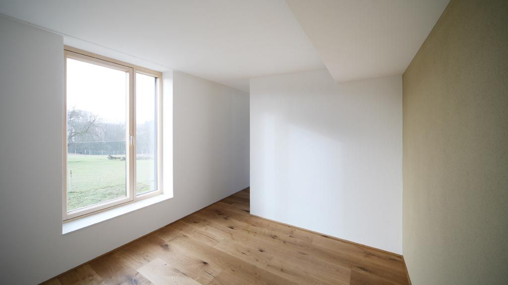

Базовая комплектация дома
Дом под ключ в комплектации черный ключ
Черный ключ подходит тем, кто хочет получить готовый конструктив дома и затем двигаться дальше поэтапно. Это базовая комплектация с фундаментом, коробкой и кровлей.
- От 39 000 ₽/м²
- Основа для следующих этапов
- Прозрачный состав работ
Что входит в черный ключ

Плюсы этой комплектации
- Минимальный входной бюджет среди всех форматов.
- Понятный старт строительства без лишних этапов.
- Можно гибко планировать последующие работы.
- Удобно, если отделку и инженерию хотите делать позже.
Что идет дальше после черного ключа
FAQ по черному ключу
Нет, это базовая строительная комплектация. Для проживания обычно выбирают белый или золотой ключ.
Да, это логичное продолжение. Следующие этапы можно выполнять по мере готовности бюджета.
Да, если задача быстро закрыть конструктив и дальше двигаться поэтапно или передать объект на следующий этап.
Другие комплектации
Контакты
Оставьте заявку, если хотите понять, подходит ли вам черный ключ и сколько он будет стоить для вашего дома.
+7(921)618-23-77- Telegram: @CKcaizer
- Email: kaizer.sk@yandex.ru